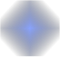
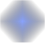

Строение атома
Всё вокруг состоит из атомов, которые включают в себя ядро и электроны. Долгое время люди считали, что атом неделим, поэтому выбрали именно этот термин (А́том — от др.-греч. ἄτομος «неделимый, неразрезаемый»). Атомное ядро состоит из протонов и нейтронов, которые в свою очередь состоят из кварков и глюонов. Кварки и глюоны в свободном состоянии не наблюдаются.